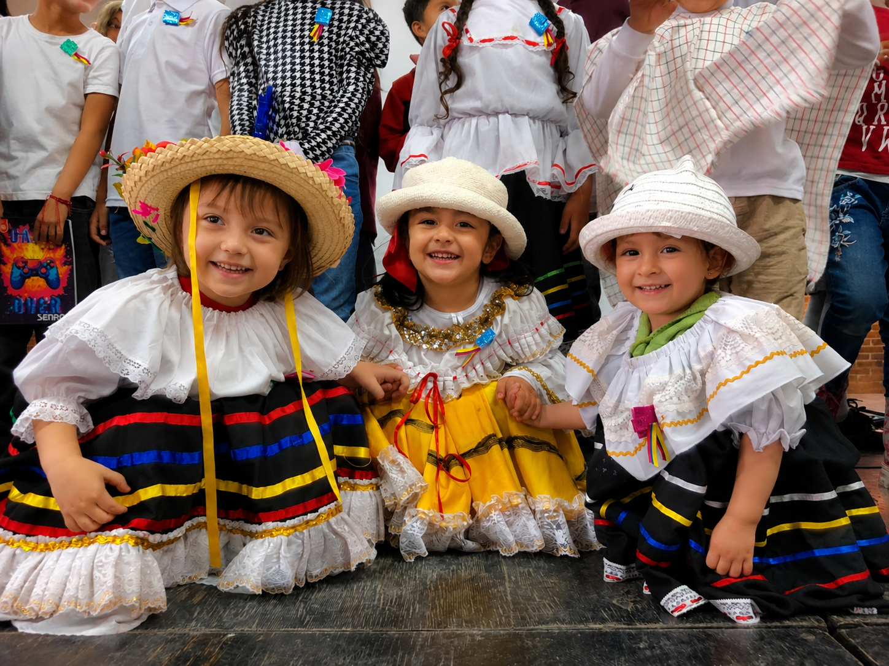

Primeras experiencias
Un comienzo lleno de descubrimientos, aprendizajes y nuevas experiencias.
Acompañamos a nuestros estudiantes en sus primeras experiencias escolares, fortaleciendo su desarrollo, curiosidad, creatividad y confianza.
Conoce nuestro preescolarUn comienzo lleno de descubrimientos, aprendizajes y nuevas experiencias.
Espacios para imaginar, explorar, crear y expresar nuevas ideas.
Formación académica, emocional, social y personal desde los primeros años.
Un ambiente que acompaña el crecimiento y fortalece la seguridad personal.

El preescolar representa el inicio de una nueva etapa en la vida de cada estudiante. Es un momento de descubrimiento, adaptación y construcción de vínculos con los demás.
A través de experiencias significativas, los niños fortalecen su curiosidad, confianza y capacidad para relacionarse con el entorno que los rodea.
Cada experiencia contribuye al desarrollo personal, emocional, social, comunicativo y creativo de los estudiantes.
Reconocimiento de emociones, construcción de confianza y expresión de sentimientos.
Convivencia, respeto, cooperación y creación de vínculos con compañeros y docentes.
Fortalecimiento del lenguaje, la escucha, la expresión de ideas y la comunicación.
Exploración del entorno, formulación de preguntas y descubrimiento de nuevas posibilidades.
Los primeros aprendizajes nacen de la curiosidad. Por eso, promovemos experiencias que invitan a observar, preguntar, imaginar, compartir y crear.
Descubrir el entorno mediante los sentidos, la observación y la curiosidad.
Expresar ideas a través del arte, el movimiento y la imaginación.
Aprender a convivir, escuchar y construir experiencias con los demás.
Explorar, crear y aprender.
Un entorno positivo permite que cada estudiante se sienta valorado, acompañado y preparado para vivir nuevas experiencias.
Espacios pensados para que los estudiantes se sientan cómodos, tranquilos y motivados.
Orientación durante las primeras experiencias escolares y los procesos de adaptación.
Fortalecimiento gradual de la autonomía, la confianza y la responsabilidad.
Conoce más sobre el proceso de admisiones y la propuesta educativa del Liceo Psicopedagógico Bolivia.